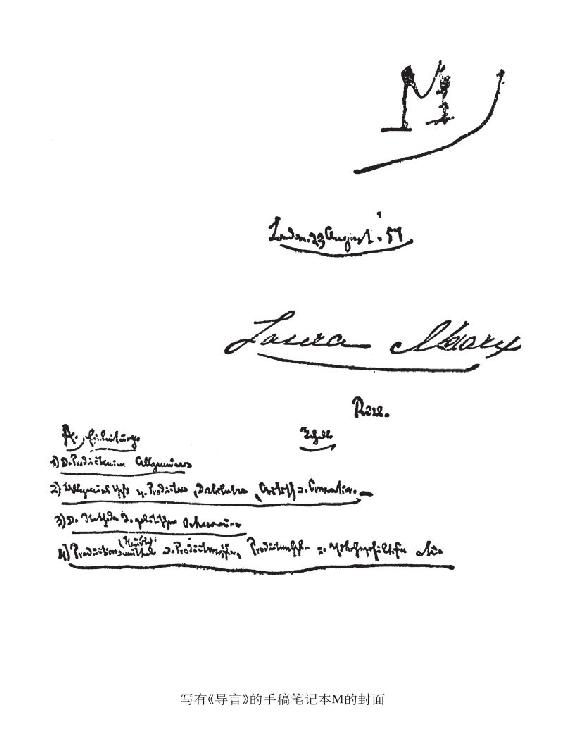

1. 生产
（α）摆在面前的对象，首先是物质生产。
在社会中进行生产的个人，——因而，这些个人的一定社会性质的生产，当然是出发点。被斯密和李嘉图当做出发点的单个的孤立的猎人和渔夫，3属于18世纪的缺乏想象力的虚构。这是鲁滨逊一类的故事，这类故事决不像文化史家想象的那样，仅仅表示对过度文明的反动和要回到被误解了的自然生活中去。同样，卢梭的通过契约来建立天生独立的主体之间的关系和联系的“社会契约”4，也不是以这种自然主义为基础的。这是假象，只是大大小小的鲁滨逊一类故事所造成的美学上的假象。其实，这是对于16世纪以来就作了准备、而在18世纪大踏步走向成熟的“市民社会”5的预感。在这个自由竞争的社会里，单个的人表现为摆脱了自然联系等等，而在过去的历史时代，自然联系等等使他成为一定的狭隘人群的附属物。这种18世纪的个人，一方面是封建社会形式解体的产物，另一方面是16世纪以来新兴生产力的产物，而在18世纪的预言家看来（斯密和李嘉图还完全以这些预言家为依据），这种个人是曾在过去存在过的理想；在他们看来，这种个人不是历史的结果，而是历史的起点。因为按照他们关于人性的观念，这种合乎自然的个人并不是从历史中产生的，而是由自然造成的。这样的错觉是到现在为止的每个新时代所具有的。斯图亚特在许多方面同18世纪对立并作为贵族比较多地站在历史基础上，从而避免了这种局限性。
我们越往前追溯历史，个人，从而也是进行生产的个人，就越表现为不独立，从属于一个较大的整体：最初还是十分自然地在家庭和扩大成为氏族6的家庭中；后来是在由氏族间的冲突和融合而产生的各种形式的公社中。只有到18世纪，在“市民社会”中，社会联系的各种形式，对个人说来，才表现为只是达到他私人目的的手段，才表现为外在的必然性。但是，产生这种孤立个人的观点的时代，正是具有迄今为止最发达的社会关系（从这种观点看来是一般关系）的时代。人是最名副其实的政治动物7，不仅是一种合群的动物，而且是只有在社会中[M—2]才能独立的动物。孤立的一个人在社会之外进行生产——这是罕见的事，在已经内在地具有社会力量的文明人偶然落到荒野时，可能会发生这种事情——就像许多个人不在一起生活和彼此交谈而竟有语言发展一样，是不可思议的。在这方面无须多说。18世纪的人们有这种荒诞无稽的看法是可以理解的，如果不是巴师夏、凯里和蒲鲁东8等人又把这种看法郑重其事地引进最新的经济学中来，这一点本来可以完全不提。蒲鲁东等人自然乐于用编造神话的办法，来对一种他不知道历史来源的经济关系的起源作历史哲学的说明，说什么亚当或普罗米修斯已经有了现成的想法，后来这种想法就被实行了等等。再没有比这类想入非非的陈词滥调更加枯燥乏味的了。

因此，说到生产，总是指在一定社会发展阶段上的生产——社会个人的生产。因而，好像只要一说到生产，我们或者就要把历史发展过程在它的各个阶段上一一加以研究，或者一开始就要声明，我们指的是某个一定的历史时代，例如，是现代资产阶级生产——这种生产事实上是我们研究的本题。可是，生产的一切时代有某些共同标志，共同规定。生产一般是一个抽象，但是只要它真正把共同点提出来，定下来，免得我们重复，它就是一个合理的抽象。不过，这个一般，或者说，经过比较而抽出来的共同点，本身就是有许多组成部分的、分为不同规定的东西。其中有些属于一切时代，另一些是几个时代共有的。[有些]规定是最新时代和最古时代共有的。没有它们，任何生产都无从设想；但是，如果说最发达的语言和最不发达的语言共同具有一些规律和规定，那么，构成语言发展的恰恰是有别于这个一般和共同点的差别。对生产一般适用的种种规定所以要抽出来，也正是为了不致因为有了统一（主体是人，客体是自然，这总是一样的，这里已经出现了统一）而忘记本质的差别。那些证明现存社会关系永存与和谐的现代经济学家的全部智慧，就在于忘记这种差别。例如，没有生产工具，哪怕这种生产工具不过是手，任何生产都不可能。没有过去的、积累的劳动，哪怕这种劳动不过是由于反复[M—3]操作而积聚在野蛮人手上的技巧，任何生产都不可能。资本，别的不说，也是生产工具，也是过去的、客体化了的劳动。可见资本是一种一般的、永存的自然关系；这样说是因为恰好抛开了正是使“生产工具”、“积累的劳动”成为资本的那个特殊。因此，生产关系的全部历史，例如在凯里看来，是历代政府的恶意篡改。
如果没有生产一般，也就没有一般的生产。生产总是一个个特殊的生产部门——如农业、畜牧业、制造业等，或者生产是总体。可是，政治经济学不是工艺学。生产的一般规定在一定社会阶段上对特殊生产形式的关系，留待别处（后面）再说。
最后，生产也不只是特殊的生产，而始终是一定的社会体即社会的主体在或广或窄的由各生产部门组成的总体中活动着。科学的叙述对现实运动的关系，也还不是这里所要说的。生产一般。特殊生产部门。生产的总体。
现在时髦的做法，是在经济学的开头摆上一个总论部分——就是标题为《生产》的那部分（参看约·斯·穆勒的著作9），用来论述一切生产的一般条件。
这个总论部分包括或者据说应当包括：
（1）进行生产所必不可缺少的条件。因此，这实际上不过是摆出一切生产的基本要素。可是，我们将会知道，这些要素实际上归纳起来不过是几个十分简单的规定，而这些规定却扩展成浅薄的同义反复。
（2）或多或少促进生产的条件，如像亚当·斯密所说的前进的和停滞的社会状态10。要把这些在亚·斯密那里作为提示而具有价值的东西提到科学意义上来，就得研究在各个民族的发展过程中各个时期的生产率程度——这种研究超出本题的范围，而这种研究同本题有关的方面，应在叙述竞争、积累等等时来谈。照一般的提法，答案总是这样一个一般的说法：一个工业民族，当它一般地达到它的历史高峰的时候，也就达到它的生产高峰。实际上，一个民族的工业高峰是在这个民族的主要任务还不是维护利润，而是谋取利润的时候达到的。就这一点来说，美国人胜过英国人。或者是这样的说法：例如，某些种族素质，气候，自然环境如离海的远近，土地肥沃程度等等，比另外一些更有利于生产。这又是同义反复，即财富的主客观因素越是在更高的程度上具备，财富就越容易创造。
[M—4]但是，这一切并不是经济学家在这个总论部分所真正要说的。相反，他们所要说的是，生产不同于分配等等（参看穆勒的著作11），应当被描写成局限在与历史无关的永恒自然规律之内的事情，于是资产阶级关系就被乘机当做社会一般的颠扑不破的自然规律偷偷地塞了进来。这是整套手法的多少有意识的目的。在分配上，他们则相反地认为，人们事实上可以随心所欲。即使根本不谈生产和分配的这种粗暴割裂以及生产和分配的现实关系，总应该从一开始就清楚地看到：无论在不同社会阶段上分配方式如何不同，总是可以像在生产中那样提出一些共同的规定来，可以把一切历史差别混合或融化在一般人类规律之中。例如，奴隶、农奴、雇佣工人都得到一定量的食物，使他们能够作为奴隶、农奴和雇佣工人来生存。靠贡赋生活的征服者，靠税收生活的官吏，靠地租生活的土地所有者，靠施舍生活的僧侣，靠什一税生活的教士，都得到一份社会产品，而决定这一份产品的规律不同于决定奴隶等等的那一份产品的规律。一切经济学家在这个项目下提出的两个要点是：（1）财产，（2）司法、警察等等对财产的保护。对此要极简短地答复一下：
关于第一点。一切生产都是个人在一定社会形式中并借这种社会形式而进行的对自然的占有。在这个意义上，说财产（占有）是生产的一个条件，那是同义反复。但是，可笑的是从这里一步就跳到财产的一定形式，如私有财产。（而且还以对立的形式即无财产作为前提条件。）历史却表明，共同财产（如印度人、斯拉夫人、古凯尔特人等等那里的共同财产）是原始形式，这种形式还以公社财产形式长期起着显著的作用。至于财富在这种还是那种财产形式下能更好地发展的问题，还根本不是这里所要谈的。可是，如果说在任何财产形式都不存在的地方，就谈不到任何生产，因此也就谈不到任何社会，那么，这是同义反复。什么也不占有的占有，是自相矛盾。
关于第二点。对既得物的保护等等。如果把这些滥调还原为它们的实际内容，它们所表示的就比它们的说教者所知道的还多。就是说，每种生产形式都产生出它所特有的法的关系、统治形式等等。粗率和无知之处正在于把有机地[M—5]联系着的东西看成是彼此偶然发生关系的、纯粹反思联系中的东西。资产阶级经济学家只是感到，在现代警察制度下，比在例如强权下能更好地进行生产。他们只是忘记了，强权也是一种法，而且强者的权利也以另一种形式继续存在于他们的“法治国家”中。
当与生产的一定阶段相应的社会状态刚刚产生或者已经衰亡的时候，自然会出现生产上的紊乱，虽然程度和影响有所不同。
总之，一切生产阶段所共有的、被思维当做一般规定而确定下来的规定，是存在的，但是所谓一切生产的一般条件，不过是这些抽象要素，用这些要素不可能理解任何一个现实的历史的生产阶段。
3 把单个的孤立的猎人和渔夫当做出发点的观点，见亚·斯密《国民财富的性质和原因的研究》（附《英国和美国》的作者爱·吉·韦克菲尔德的评注，1835—1839年伦敦版）一书的序论和大·李嘉图《政治经济学和赋税原理》1821年伦敦第3版第1章第3节。——5。
4 社会契约（Contrat social）是卢梭提出的政治理论。按照这一理论，人们最初生活在自然状态，在这种状态下，人人都是平等的。私有财产的形成和不平等的占有关系的发展决定了人们从自然状态向市民状态的过渡，并导致以社会契约为基础的国家的形成。政治上的不平等的进一步发展破坏了这种社会契约，导致某种新的自然状态的形成。能够消除这一自然状态的，据说是以某种新的社会契约为基础的理性国家。卢梭在1755年阿姆斯特丹版的《论人间不平等的起源和原因》和1762年阿姆斯特丹版的《社会契约论，或政治权利的原则》这两部著作中详细阐述了这一理论。——5。
5 市民社会（bürgerliche Gesellschaft）这一术语出自黑格尔《法哲学原理》第182节（见《黑格尔全集》1833年柏林版第8卷）。在马克思的早期著作中，这一术语有两重含义。广义地说，是指社会发展各历史时期的经济制度，即决定政治制度和意识形态的物质关系总和；狭义地说，是指资产阶级社会的物质关系。因此，这一术语应按照上下文作不同的理解。——5。
6 氏族（或部落）的原文是“Stamm”，这一术语在19世纪中叶的历史科学中含义比现在要广，它表示渊源于同一祖先的人们的共同体，包括近代所谓的“氏族”（Gens）和“部落”（Stamm）两个概念。另外，马克思关于原始社会和早期部落制中家庭关系的观点，即认为人们最初先是形成为“家庭”，然后从家庭发展和扩大而成为“氏族”，也是沿用当时历史科学中的观点。美国的著名民族学家路·亨·摩尔根在《古代社会》（1877年）中第一次把“氏族”和“部落”区分开来，并下了准确的定义，第一次阐明了氏族作为原始公社制度的主要基层单位的意义。瑞士历史学家约·雅·巴霍芬的《母权论》（1861年）也在古代社会和民族学的研究方面作出了新贡献。马克思和恩格斯后来吸收了这些新研究成果，从马克思对摩尔根著作的摘录中可以看出他关于氏族和家庭之间关系的新观点，即氏族是以血缘为基础的人类社会的原始形式，氏族纽带的解体，才发展起各种形式的家庭。恩格斯在1884年写的《家庭、私有制和国家的起源》（见《马克思恩格斯文集》第4卷）中全面阐述了这些新见解。恩格斯还为《资本论》第一卷第十二章（见《马克思恩格斯文集》第5卷第407页）加了关于氏族和家庭的关系的脚注（50a）。——6、51、65、123。
7 政治动物原文是“Zϖου πολιτιχóυ”，这是亚里士多德在他的《政治学》第一篇开头给人下的定义。马克思在《资本论》第一卷第十一章中指出：“人即使不像亚里士多德所说的那样，天生是政治动物，无论如何也天生是社会动物。”他并在该章脚注（13）中写道：“确切地说，亚里士多德所下的定义是：人天生是城市的市民。”（见《马克思恩格斯文集》第5卷第379页）——6、147。
8 法国经济学家弗·巴师夏和美国经济学家亨·查·凯里都是庸俗经济学家，他们尽管在许多方面有所区别，但都主张“和谐论”，对经济关系的分析都是反历史的，说什么生产最初都是由孤立的个人进行的，然后才有分工、交换等，从而形成为社会。马克思在1857年写了一篇未完成的手稿《巴师夏和凯里》，对他们的观点进行了批判（见《马克思恩格斯全集》中文第2版第30卷第3—18页）。
至于皮·约·蒲鲁东，他在自己的著作《经济矛盾的体系，或贫困的哲学》（1846年巴黎版）中也坚持与巴师夏和凯里类似的错误哲学理论和历史理论，对蒲鲁东的这些错误理论，马克思在1847年写的《哲学的贫困》（《马克思恩格斯文集》第1卷）一书中曾专门进行了分析批判，特别是在第一章第一节开头,分析了蒲鲁东如何编造从孤立的个人开始进行交换等等，在第三节末尾则分析了蒲鲁东关于普罗米修斯的谬论。——6。 [9] 约·斯·穆勒《政治经济学原理及其对社会哲学的某些应用》（两卷集）1848年伦敦版第1卷第1篇《生产》第1章，所加的标题就是《生产的要素》。——10。
10 前进的和停滞的社会状态，见亚·斯密《国民财富的性质和原因的研究》1776年伦敦版第1篇第8章和第11章结束语。——10。
11 关于生产不同于分配的内容，见约·斯·穆勒《政治经济学原理及其对社会哲学的某些应用》（两卷集）1848年伦敦版第1卷第25—26页。——11。